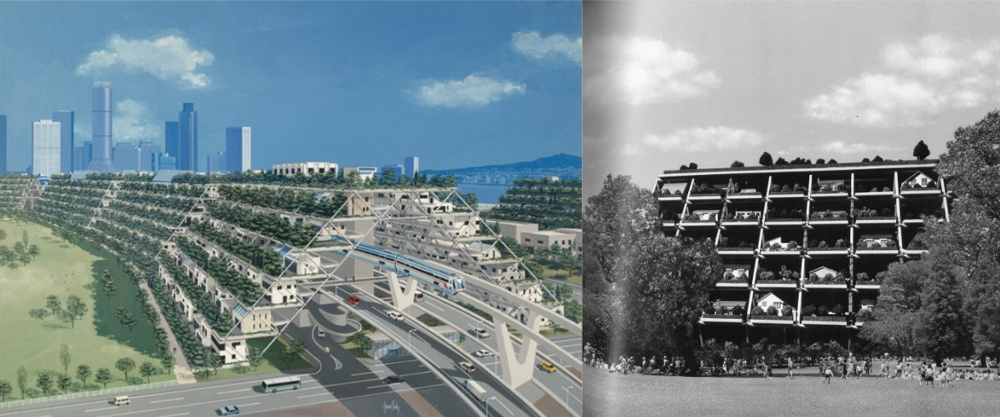
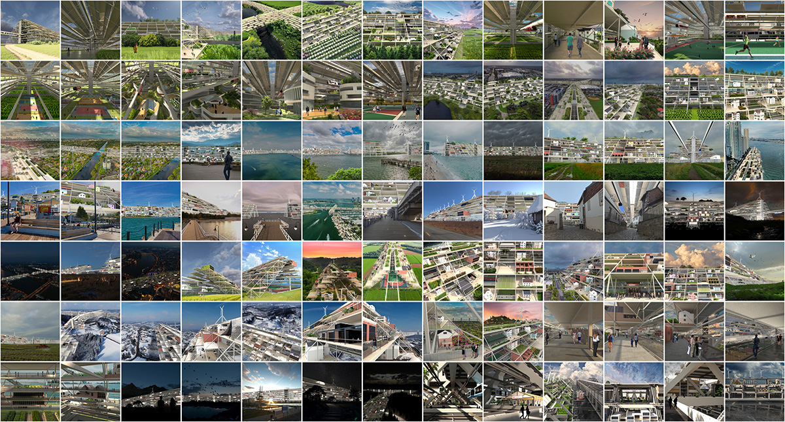
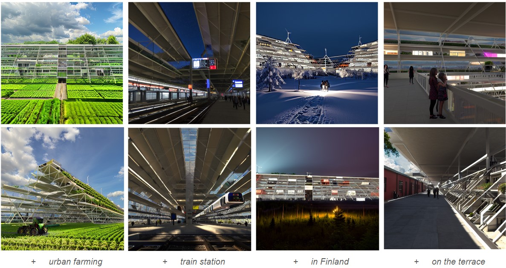

STRATIFORM CITY? - in progress
Trained on a dataset of 100 images (93 renderings, 5 historical drawings, and 2 similiar design) that represent Kiyonori Kikutake's 1972 concept of Stratiform Structure Modules.
 Historical documents. Training dataset.
Intermediate results of Stratiform-incepted imagination.
 +specified contexts
To be continued...
To be continued...